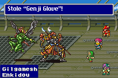
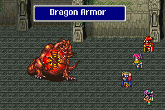

Story Line (5)
ค้นหาหญ้ามังกร
Side-Quest "Bal
Cave"
หลังจากออกมาจากปราสาท Bal
ด้านตะวันออกจะมีถ้ำ Bal ซึ่งใช้สำหรับผ่านไปยังสะพานทางเชื่อมไปยังปราสาท
Exdeath
Kelb
ด้านทิศเหนือจะเจอหมู่บ้าน Kelb
แต่ภายในหมู่บ้านกลับพบว่า บ้านทุกหลังล๊อกหมด
ยกเว้นหลังเดียวเท่านั้น ภายในนั้นจะพบกับ Kelgar
ผู้ซึ่งเป็นหนึ่งในสี่ผู้กล้า ที่เคยปิดผนึก Exdeath ไว้เมื่อ 30 ปีก่อน
แต่เขากลับโกรธพวก Butz ที่ทำให้ Exdeath ฟื้นคืนชีพขึ้นมา
จึงทดสอบ Butz โดยการสู้กัน ตัวต่อตัว
Kelgar ใช้ท่าไม้ตาย Lupine Attack โจมตีใส่ Butz
แต่ Butz หลบได้ อีกทั้งยังสวนกลับใส่ Kelgar จนสลบไป
เมื่อ Kelgar ถามว่า Butz เรียนมาจากไหน
Butz จึงตอบว่า จากพ่อของเขา, Dorgan
เมื่อ Galuf และ Kelgar ได้ยินชื่อของ Dorgan ถึงกับตกใจ
Kelgar บอกว่า แท้จริงแล้ว พ่อของ Butz คือหนึ่งในสี่ผู้กล้าเช่นกัน
ผู้กล้าทั้งสี่คนคือ Dorgan, Kelgar, Zeza, Galuf
นั่นหมายความว่า พ่อของ Butz เป็นคนจากโลกของ Galuf
เมื่อ 30 ปีก่อน พวกเขาได้ไปยังโลกของ Butz เพื่อต่อสู้กับ Exdeath
และได้ปิดผนึก Exdeath ไว้ที่โลกนั้น
แต่ Dorgan กลับไม่ยอมกลับไปยังโลกของตน
เมื่อเล่าเรื่องราวจบ Kelgar ได้สั่งให้ลูกน้องเปิดประตูหมู่บ้านให้
Side-Quest "Kelb"
จะเป็นวิธีการพักในโรงแรมฟรี และการเก็บ Requiem
Song และ Corna Jar
Corna Jar ใช้เพิ่มโอกาสสำเร็จในการ Catch ของอาชีพ Mediator
จุดมุ่งหมายต่อไปคือ "ภูเขามังกร"
Hiryuu Valley
เก็บ Learning Magic 1 เวทย์ คือ
Magic Hammer จาก Drippy (หากยังไม่ได้เก็บมาจาก
Butz World)
* Note : บนภูเขาจะเจอศัตรูบางตัวที่เป็นผีดิบ ซอมบี้ โครงกระดูก
สามารถใช้ บทเพลง "Requiem"
ส่งไปสู่สุขติได้
ซึ่งบทเพลง "Requiem" นี้จะโจมตีเฉพาะสิ่งไม่มีชีวิตเท่านั้น
(ไม่มีผลต่อสิ่งมีชีวิต)
บนภูเขา จะเจอ Golem โดนศัตรูรุมทำร้าย ให้ช่วยเขา
Bone Dragon
Level : 37
HP : 3,000
Weakness : Fire
Zombie Dragon
Level : 37
HP : 4,000
Weakness : Fire
Golem
Level : 3
HP : 2,500
ต้องช่วย Golem จากการโดนรุม (อย่าไปโจมตีเขาล่ะ)
หาก HP ของ Golem ลดลง สามารถใช้เวทย์เพิ่ม HP ให้เขาได้
สามารถใช้ บทเพลง "Requiem"
ขับกล่อมซอมบี้ทั้งสองตัวได้โดยไม่ทำอันตราย Golem
เมื่อปราบได้ จะได้รับ Item คือ Golem
กดใช้ จะเรียนรู้ Summon Magic Golem
ระหว่างทาง ยังมี Bone Mail ให้เก็บด้วย
(ขอบคุณ คุณ positron ที่เอื้อเฟื้อข้อมูล ครับ)
เมื่อขึ้นไปถึงยอดเขา จะเจอกับ "หญ้ามังกร"
แต่เมื่อ Lenna ไปหยิบ กลับถูกโจมตี
นั่นเลยทำให้ทราบว่า ทำไมมังกรถึงใกล้จะสูญพันธ์ เพราะไม่สามารถกินหญ้าได้นั่นเอง
Boss : Hiryuu Plant
Level : 33
HP : 12,000
Hiryuu Flower
Level : 31
HP : 100
* Note : วิธีปราบง่ายๆ ใช้ Terrain หากโชคดีจะสุ่มโจมตีด้วย Cave-in
ซึ่งรุนแรงมาก
Castle Bal
เมื่อได้ "หญ้ามังกร" แล้ว นำกลับไปยังปราสาท Bal
แต่เมื่อไปถึง ทหารกลับไม่ยอมให้เข้าไปในปราสาท เพราะคิดว่าเป็นแผนของ Exdeath
Galuf จึงต้องหาทางเข้าทางอื่น นั่นคือทางระบายน้ำข้างปราสาท
เมื่อเข้าไปได้ ให้ไปหา Cara ที่ห้องนอนชั้นบน
จะพบว่าเธอป่วยหนัก และเธอบอกว่า Guido ติดต่อเธอมา ให้รีบไปหา Guido
ซึ่ง Guido นั้นเป็น Sage (นักปราชญ์) ที่มีอายุมากถึง 700 ปี
และเขายังได้ทำนายเรื่องที่ Crystal ในโลกของ Butz จะแตกสลายอีกด้วย
จากนั้นให้นำ "หญ้ามังกร" ไปให้ Hiryuu ที่อยู่บนดาดฟ้า
แต่ Hiryuu กลับไม่ยอมกินหญ้า Lenna จึงกินให้ดูเป็นตัวอย่าง
ทำให้พวก Butz ตกใจมาก เพราะ "หญ้ามังกร" มีพิษร้ายต่อร่างกายมนุษย์
ดังนั้น Hiryuu จึงยอมกินหญ้า และหายป่วย ส่วน Lenna ได้รับยาจาก Cara
จุดหมายต่อไปคือ ถ้ำของ Guido ที่อยู่ทางด้านทิศตะวันออกเฉียงเหนือของ Hiryuu
Valley
Guido's Dwelling
เมื่อพวก Butz กำลังจะเข้า กลับโดน Exdeath โจมตีใส่เกาะ ทำให้เกาะจมลงไปใต้น้ำ
แต่พวก Butz ก็หนีออกมาได้ทัน จุดหมายต่อไปคือ ปราสาท Surgate ซึ่งอยู่ทิศตะวันออก
Castle Surgate
เจ้าของปราสาทนี้คือ Zeza ผู้เป็นหนึ่งในสี่ผู้กล้า
ตอนนี้เขายกกองทัพเรือไปยังปราสาทของ Exdeath
Side-Quest "Surgate"
ภายในปราสาทมีสิ่งของให้เก็บ 2 อย่าง คือ Speed
Song และ Time Magic Float
จุดหมายต่อไปคือ ทัพเรือของ Zeza
Zeza's Ship
นำ Hiryuu ลงไปบนเรือลำใหญ่ได้เลย
เมื่อลงไปจะพบกับ Zeza เขาบอกว่า จริงๆ แล้วทัพเรือนี้เป็นเพียงตัวล่อเท่านั้น
เพราะเป้าหมายจริงๆ คือการทำลายหอคอยเวทย์มนต์ที่เป็นตัวสร้าง Barrier
หากทำลายหอคอยเวทย์มนต์ได้เพียงเสาเดียว ก็จะทำลาย Barrier ได้ทั้งหมด
จากนั้นให้ไปพักผ่อนภายในตัวเรือ
แต่ในคืนนั้นจะเจอศัตรูเข้ามาบุกเข้าโจมตี
Boss : Gilgamesh
Level : 31
HP : 8,888
Boss : Enkidou
Level : 29
HP : 4,000

ช่วงแรกจะเจอแต่ Gilgamesh เท่านั้น
หากขโมยจาก Gilgamesh จะได้รับ Genji Glove ซึ่งเป็นถุงมือที่ดีที่สุดในเกม
^^
สู้ไปสักพัก Gilgamesh จะเรียก Enkidou ออกมาช่วย
ซึ่ง Enkidou สามารถใช้เวทย์ Whirlwind ได้
มันจะฟื้นฟู HP ให้ Gilgamesh ได้ถึง 4,000 หน่วย
ดังนั้นให้จัดการ Enkidou เสียก่อน จึงค่อยหันมาโจมตี Gilgamesh
เมื่อปราบ Gilgamesh ได้ มันจะเรียก Enkidou ให้มาฟื้นฟู HP ให้
แต่เมื่อมันหันหลังกลับไป กลับพบว่า Enkidou ตายไปซะแล้ว : P
ดังนั้นมันจึงผลัก Galuf ตกลงไปในทะเลด้วยกัน
แต่ Hiryuu มาช่วยไว้ได้
จากนั้นลงไปในตัวเรืออีกครั้ง
ด้านในจะพบ Zeza ซึ่งบอกให้เลื่อนฝาหีบ เพื่อเปิดไปยังห้องลับ
(ไปอยู่ตรงข้ามกับ Zeza แล้วกดปุ่ม A จะเลื่อนฝาหีบได้)
ภายในจะเป็นเรือดำน้ำ Zeza ใช้มันลอบเข้าไปใน Barrier จากทางใต้น้ำ
Barrier Tower
เมื่อเข้ามาภายใน Zeza จะอธิบายแผนให้ฟัง
เขาจะลงไปด้านล่าง เพื่อปิดสวิทต์เครื่องยนต์
ส่วนพวก Butz ให้ขึ้นไปด้านบนของหอคอยเพื่อทำลายสายส่งพลัง
ภายในหอคอยจะมี Learning Magic ให้เรียนรู้ 4 เวทย์ คือ
Time Slip จาก Traveler
L3 Flare จาก Red Dragon
L4 Quarter จาก Tricker
L2 Old จาก Tricker
ภายในจะมีหีบอยู่ใบหนึ่ง ซึ่งมีศัตรูเฝ้าอยู่คือ
Red Dragon

Level : 30
HP : 7,500
Weakness : Water, Fire, Ice
ซึ่ง Red Dragon เป็นสัตว์กึ่ง Undead ทำให้ L5 Doom ไม่มีผล (แม้จะมี Level
หารด้วย 5 ได้ลงตัวก็ตาม)
อีกทั้งการใช้ Trick กำจัด Undead โดยใช้ Phoenix หรือเวทย์ Life กับมันก็ไม่มีผลด้วย
Learning L3
Flare Magic
ที่สำคัญคือ มันมี Learning Magic L3 Flare ให้เรียนรู้ด้วย
แต่ต้องเตรียมการหลายอย่างคือ
1. ความสามารถ Control ของอาชีพ Mediator
2. ความสามารถ Combine ของอาชีพ Chemist
3. สมาชิกที่มี Level หารด้วย 3 ลงตัว
4. สมาชิกคนนั้น ต้องติดความสามารถ Learning ด้วย หรือเปลี่ยนเป็นอาชีพ Blue
Mage
เมื่อเตรียมการเรียบร้อยก็ลงมือ
เปิดหีบเพื่อเข้าต่อสู้
ใช้ความสามารถ Control เพื่อบังคับมัน
มันจะมีความสามารถ L3 Flare แต่ไม่สามารถเลือกโจมตีใส่พวก Butz ได้
ให้ใช้ความสามารถ Combine เพื่อผสมยา
โดยให้ผสมระหว่าง Dragon Fang กับ Phoenix Down และใช้กับ Red Dragon
จะทำให้เกิด Dragon Armor ซึ่งมีความสามารถสะท้อนเวทย์มนต์ติดอยู่ด้วย

จากนั้นให้กดใช้ L3 Flare ซึ่งจะสะท้อนมาโดนตัวละครที่มี Level หารด้วย
3 ลงตัว
เมื่อปราบมันได้ก็จะได้ Learning Magic L3 Flare
มาครอบครอง ^^;
และได้รับ Drain Sword ด้วย
แต่บางครั้งอาจเจอกับ
Yellow Dragon (x2)
Level : 38
HP : 8,500
ด้านบนจะมีหีบอีก 1 ใบ ซึ่งอาจมี Red Dragon หรือ Yellow Dragon (x2) เฝ้าอยู่ก็ได้
เมื่อปราบได้จะได้รับ Gold Hairpin
ซึ่งเป็นอุปกรณ์สวมศีรษะ ทำให้ใช้ MP เพียงครึ่งเดียว
เมื่อขึ้นไปถึงชั้นบนสุด Zeza ก็ติดต่อมา บอกว่าเขาปิดเครื่องกำเนิดพลังแล้ว
จากนั้นพวก Butz จึงทำลายสายส่งพลัง แต่กลับถูกศัตรูโจมตี
Boss : Atomos
Level : 41
HP : 19,997
Atomos จะยิง Comet โจมตี ซึ่งรุนแรงมาก มีผลทำให้ตัวละครตายได้
เมื่อมีตัวละครใดตาย Atomos จะค่อยๆ ดูดเข้าไปในปากของมัน
ซึ่งในช่วงเวลานั้นมันจะไม่โจมตี เมื่อมันดูดเข้าไปใกล้ๆ จะถึงปากของมันแล้ว
ค่อยชุบชีวิตตัวละครที่ตายขึ้นมาก็ได้
เมื่อปราบมันได้ ทำให้หอคอยถล่ม ทำให้ Barrier ที่กางไว้หายไป
แต่ Zeza ยังติดอยู่ในหอคอย เขาบอกว่าไม่เป็นไร ให้ไปรอเขาที่เรือดำน้ำ
Galuf แม้จะรู้ว่า Zeza ไม่รอด แต่ก็ยังไปรอที่เรือดำน้ำ
เมื่อมีเรือดำน้ำ จุดหมายต่อไปคือ ถ้ำของ Guido ที่จมลงไปใต้น้ำ
Next Story
6